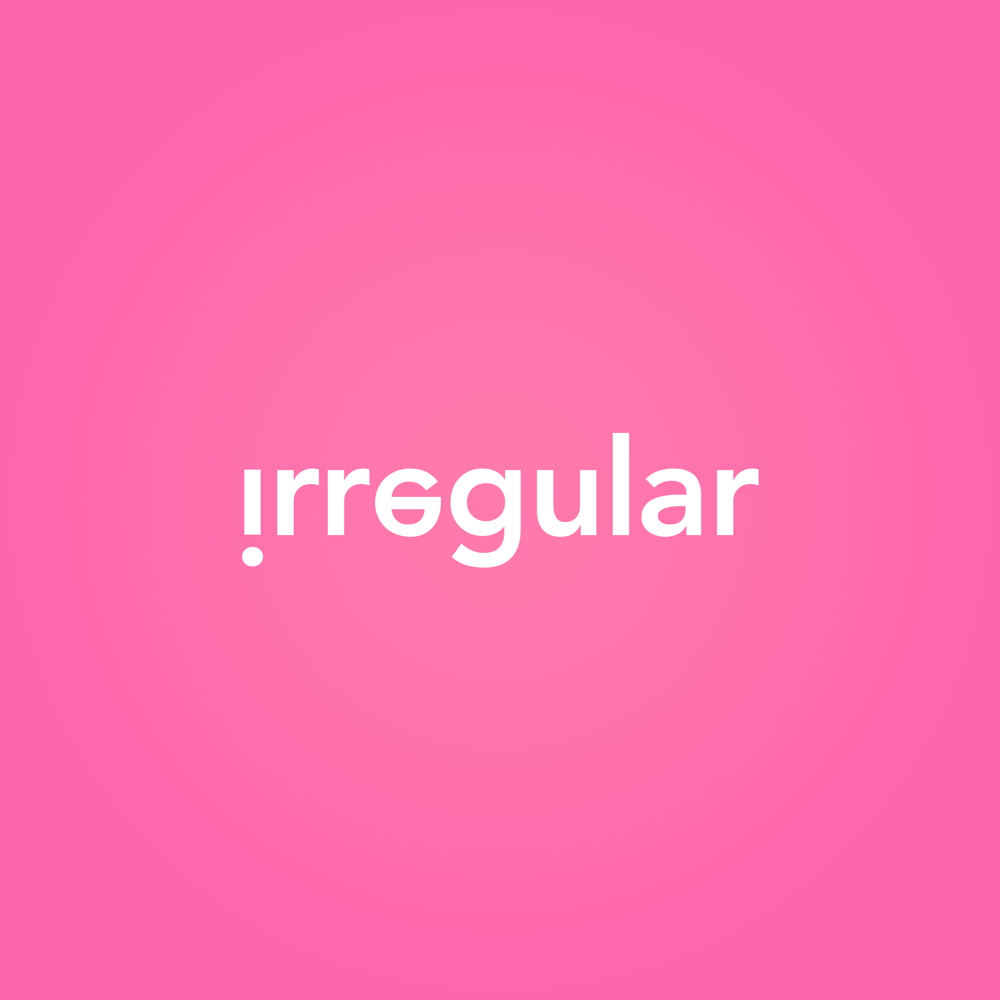

Irregular
We love to code & design. Not necessarily in that order
Irregular utvecklar moderna användarupplevelser med rätt teknik på rätt plats.
Case
Teamet har bland annat producerat Wavy, en realtidsuppdaterande bokningstjänst för frisörer, med appar som har höga design- och nyttovärden. Den realiserades med Meteor, MongoDB, Cordova & React Native för att få realtidsuppdatering och rätt användarupplevelse. T.ex genom en custom lösenordslös single sign-on autentisering (via SMS).
Användarnära
Vi baserar våra lösningar i användares verkliga behov - etnografisk research, prototyping, mvp-testning, m.fl verktyg, gör oss säkra på att lösa rätt problem på rätt sätt.
Teknisk kompetens
Våra utvecklare jobbar bland annat med Android, Arduino, C#, Cordova, CSS, HTML, iOS, Java, JavaScript, Meteor, MongoDB, Node, PHP, React samt SQL.
Location
Vi finns i Visby, Uppsala och i Stockholm. Maila oss! Eller ring Fredrik Ampler på 070-607 73 73
Team
- Nora Fager, AD
- Fredrik Ampler, UX/pm
- Erik Ivares, @ErikIvares, Junior developer
- Johan Thallauer, @JohanTh, Developer
- Robin Jakobsson, @rjakobsson, Developer